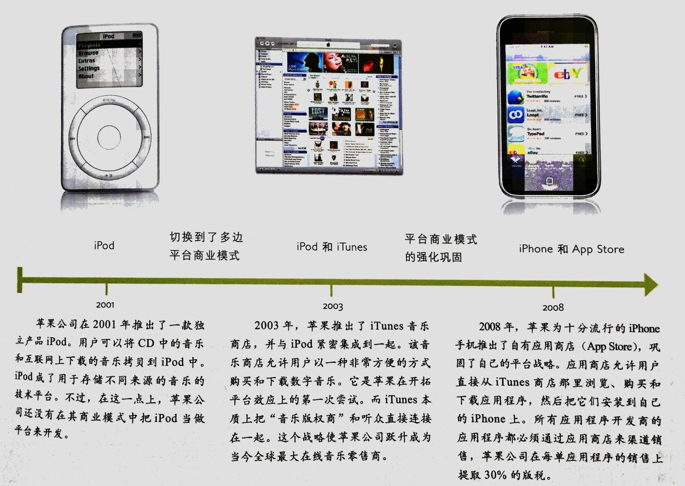
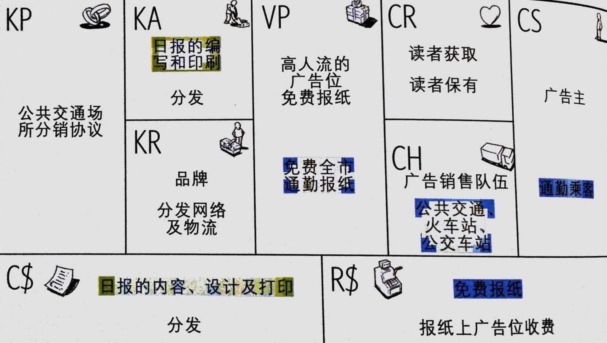
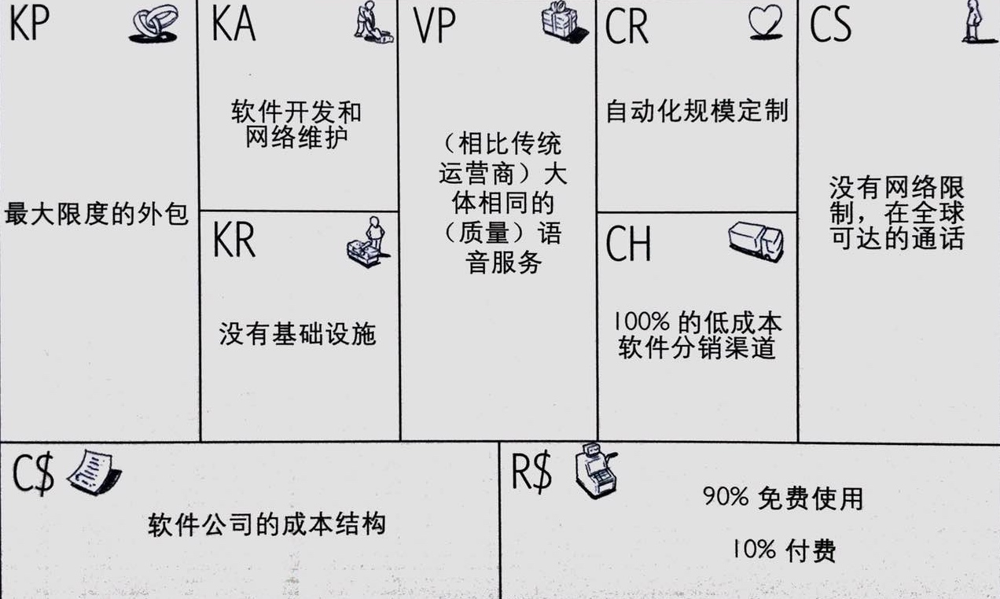

商业模式新生代（二）
商业模式--式样1
非绑定式商业模式
“非绑定”企业的概念认为，存在三种不同的基本业务类型：客户关系型业务、产品创新型业务和基础设施性业务。
- 每种类型都包含不同的经济驱动因素、竞争驱动因素和文化驱动因素
- 这三种类型可能同时存在于一家公司里，但是理论上这三种业务“分离”成独立的实体，以便避免冲突或不利的权衡妥协。

长尾式商业模式
长尾式商业模式的核心是多样少量：他们关注于为利基市场提供大量产品，每种产品相对而言卖得都少。
- 利基产品销售总额可以与凭借少量畅销产品产生绝大多数销售额的传统模式媲美。
- 长尾模式需要低库存成本和强大的平台，并使得利基产品对于兴趣买家来说容易获得。
安德森认为有三个经济触发因素在媒体行业引发了长尾现象：
- 生产工具的大众化：生产产品相对比较容易
- 分销渠道的大众化：互联网使得数字化的内容分发成为商品且能以极低的库存、沟通成本和交易费用，为利基产品开拓新市场。
- 联系供需双方的搜索成本不断下降。
图书出版行业的变革
传统的模式

新的模式：

乐高（LEGO）的新长尾
乐高 + 乐高用户可以自己设计产品并在线销售 = 乐高工厂
+ 乐高允许用户自己销售自己设计的产品 = 乐高的用户产品目录
乐高工厂：客户设计（玩具）套件

多边平台式商业模式
多边平台将两个或者更多有明显区别但又相互依赖的客户群体集合在一起。
只有相关客户群体同时存在的时候，这样的平台才具有价值。多边平台通过促进各方客户群体之间的互动来创造价值。多边平台需要提升其价值，直到它达到可以吸引更多用户的程度，这种现象被称为网络效应。
多边平台对于某个特定用户群体的价值本质上依赖这个平台“其他边”的数量，经常会面临着一个“先有鸡还是先有蛋”左右为难的困境。
多边平台的运营商必须要问自己几个关键的问题：
- 我们能否为平台各边吸引到足够数量的客户？
- 哪边（客户）对价格更加敏感？
- 能够通过补贴吸引价格敏感一边的用户吗？
- 平台另一边是否可以产生充足的收入来支付这些补贴？
例子：谷歌
作为一个多边平台，Google有非常独特的收入模式。它从广告商客户细分那一边赚钱，而同时免费补贴另外两边的客户群体：网民和内容所有者（站长）。
核心资源是搜索平台，这个平台支撑着三种不同的服务：
- 网页搜索 google.com
- 广告投放 AdWords
- 第三方内容货币化 AdSense
三个关键业务：
- 建设和维护搜索基础设施
- 管理三个主要客户细分群体：新用户、内容拥有者以及广告主
- 向新客户、内容拥有者和广告主推广其搜索平台

Wii对决PSP/Xbox
Wii和PSP/Xbox的战略差异：
- 产品的低成本差异化（运动控制）
- 关注尚未开发又很少关注技术（休闲玩家）的新市场
- Wii可以从两边都产生收入的双边平台商业模式式样。
PSP/Xbox

Wii

Apple的平台运营商演变

免费式商业模式
- 在免费式商业模式中，至少有一个庞大的客户细分群体可以享受持续的免费服务；
- 免费服务可以来自多种模式。通过该商业模式的其他部分或其他客户细分群体，给非付费客户细分群体提供财务支持。
有三种可选项的三种不同商业模式式样。每种商业模式式样都有不同的潜在的经济特征，但是他们都有一个共同特点：至少有一个客户细分群体持续从免费的产品或服务中受益。这三种模式是：
- 基于多边平台的免费产品或服务。（基于广告 advertising-based）
- 带有可选收费服务的免费基本服务。 所谓免费增收 freemium
- “诱钓”模式（bait & hock），即使用免费或廉价的初始产品或服务来吸引用户重复购买。
多边平台模式（广告）
Metro：

免费增收商业模式：基础免费，增值收费
Flickr

开源：变形的免费增收模式
Reahat

Skype

Skype对决电信运营商

保险模式：颠倒的免费模式

诱钓模式
免费移动电话的诱钓模式

剃刀与刀片：吉列

开放式商业模式
开放式商业模式可以用于那些通过与外部伙伴系统性合作，来创造和捕捉价值的企业。这种模式可以是“由外到内”，将外部的创意引入到公司内部，也可以是“由内而外”，将企业内部闲置的创意和资产提供给外部的伙伴。

-
以下的五种样式仅为描述商业模式式样语言的初始集。 ↩
Copyright © 2015 Powered by MWeb, Theme used GitHub CSS.